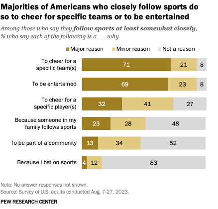

Turf vs. Grass: An Introduction

Aaron Rodgers of the New York Jets. New team, new atmosphere, and a new step in his career. He only took 4 snaps before he could step no longer. This tragic injury occurred at the infamous MetLife Stadium in week 1 against the Buffalo Bills.
Jaelan Phillips, linebacker for the Miami Dolphins, played the New York Jets at MetLife Stadium. His Achilles popped while sprinting off the line of scrimmage in a non-contact injury.
During the MLS Season when Inter Miami was set to play Atlanta United, superstar Lionel Messi was set to miss the game with rumors that the team was protecting him from injury being that the game would be played at the fully turfed Mercedes-Benz Stadium.
With the 2026 FIFA World Cup coming to the United States, and games being set to be played in many NFL Stadiums, sports organizations and fans across football and fútbol are pushing for all turf fields to be replaced with grass in an effort to minimize injury, specifically non-contact injuries, as it has been found that more injuries occur on turf than on regular grass fields.
According to the National Football League Players Association (NFLPA), the “union” for professional football players, they have found that “players have a 28% higher rate of non-contact lower extremity injuries when playing on artificial turf. Of those non-contact injuries, players have a 32% higher rate of non-contact knee injuries on turf and a staggering 69% higher rate of non-contact foot/ankle injuries on turf compared to grass”.
Their claim is brief and straightforward: “NFL clubs should proactively change all field surfaces to natural grass.”

At the end of the day, the NFL is an entertainment business, and it's inevitable that players will get hurt; it is a contact sport. There is a difference, however, between getting tackled and breaking or tearing something as a result versus completing a normal running motion. These non-contact injuries are detrimental to the team, the player physically and mentally, as well as the NFL being in the business they are.
Fans love watching players play and if you don’t have your superstar quarterback playing, ticket sales may stagnate and casual fans may be less likely to tune into the game. According to Pew Research Center, of the people questioned, 73% stated that a reason they would watch a game is to watch a certain player.
Protecting the players is a major concern at the moment, and the athletes are the ones who make the NFL what it is. The statistics speak for themselves and this is only really scratching the surface on this very topic. As a sports fan and an athlete, I felt it was important to analyze this surprising claim and statistics surrounding it as it has been making its way to the headlines week after week. There is still much more research to be done along with the financial aspects and logistics to make the most educated decision on this topic, but it's difficult to not weigh in when you see the frustrations arising. I am looking to follow up on this and dig deeper into this topic.